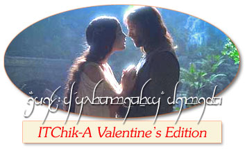
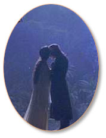

|
ITChik-a
: Etcetera
By
Chief Bubuwit
It's
the love month kaya special ang ating issue ngayon at syempre
mga kuwento ng pag-ibig ang ating mga chik-a.
Valentine
#1 - sino ba itong dalawang nilalang na ito na
may extra sweetness ang pagtitinginan sa isa't-isa at napagkakamalan
na tuloy na partners in life? ayon sa kwento ng ating very
reliable source habang kumakain ng matabang na spaghetti ng
la casita, na sa mga kilos at galaw daw nina pygmalion at
galatea makikita na parang sila ay mga bagong kasal! aba'y
mahirap talagang mapansin sa biglang tingin itong dalawa na
ito, ngunit sadya talagang matindi ang radar ng ating bubwit.
epekto yata ito ng pagkain sa la casita.
Valentine
#2 - eto ay medyo obvious pero syempre, kikiligin
ang ating mga dear readers dahil matagal nang sinusubaybayan
ang lovelife nitong ating next pair na sina pyramus at thisbe.
ito palang dalawang hitad na ito ay may mga superpowers! opo
mga dear readers! they have the extraordinary ability to turn
invisible! ibig sabihin bigla na lang silang magdi-disappearing
act habang ang lahat ng tao ay abala. ang hindi natin matukoy
ay kung saan sila nagpunta? nag- date kaya? sana nga at nang
may kasalan uli tayong daluhan.
pinag-uusapan
ang kasalan, malugod na binabati ng mga itchika bubwits ang
ating kasamang si loveleah m. sa kanyang wedding! best
wishes from all of us here! minsan na ring na-feature itong
si loveleah dito sa itchika pero hindi namin alam kung may
nakahula nito. this is the first time that we gave out an
answer here in itchika. review your past issues para magkaroon
kayo ng idea kung saang section yun.
valentine
#3 - kasalan na rin lang ang pinag-uusapan, ituloy-tuloy
na natin... ano ba itong alingasngas ang ating nasagap na
mayroon yatang summer wedding na magaganap? aba'y maganda
iyan! ang problema nga lang ay mukhang sa napakalayong kaharian
ng albania gaganapin ang kasalan. sana'y nagkamali lamang
ang ating bubuwit na si konde adolfo sa kanyang nabalitaan.
baka hindi kami makadalo kung sakali,
masarap pa naman ang pagkain doon! can you confirm this matter
to us, konde adolfo? tanungin mo na rin si prinsipe aladin
at si prinsesa flerida kung may
iba pa silang nasagap na chika.
maligayang
araw ng mga puso sa lahat!!! sa mga solo flight ngayong feb
14, look at
the brighter side, at least tipid ang valentine's nyo!
Sana
ay nasiyahan kayo sa Valentine Presentation ng Chik-A at 'yung
mga nakahalata diyan, alam na ninyo ang dapat gawin! Sa mga
nagtatanong nga pala nang kung anu-ano tungkol sa ISTChik-A,
mayroon na kami ngayong FAQ
section. O ano? Bisita na!
|